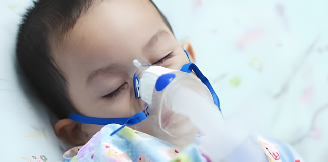

Selamat Datang
Pneumonia adalah infeksi saluran pernapasan akut yang menyerang jaringan paru-paru (alveoli). Aplikasi ini hadir untuk memetakan data kasus agar langkah pencegahan lebih tepat sasaran.

Sistem Monitoring Pneumonia Balita Kota Bandung
Pneumonia adalah infeksi saluran pernapasan akut yang menyerang jaringan paru-paru (alveoli). Aplikasi ini hadir untuk memetakan data kasus agar langkah pencegahan lebih tepat sasaran.

Pneumonia adalah infeksi saluran pernapasan akut yang menyerang jaringan paru-paru (alveoli). Pada kondisi normal, kantong udara kecil di paru-paru terisi oleh udara, namun pada penderita pneumonia, kantong tersebut dipenuhi oleh cairan atau nanah. Hal ini mengakibatkan asupan oksigen menjadi terbatas dan membuat penderita, terutama balita, mengalami sesak napas yang hebat.
Jika tidak segera ditangani, pneumonia dapat menyebabkan komplikasi serius yang mengancam nyawa. Infeksi dapat menyebar ke aliran darah (sepsis) yang memicu kegagalan organ tubuh lainnya. Selain itu, penumpukan cairan di sekitar paru-paru (efusi pleura) atau abses paru dapat terjadi, yang secara drastis menurunkan tingkat saturasi oksigen dan berujung pada kematian mendadak pada balita.
Pencegahan utama pneumonia pada balita dimulai dari pemberian imunisasi lengkap, terutama vaksin PCV (Pneumococcal Conjugate Vaccine) dan DPT-HB-Hib, serta memastikan pemberian ASI eksklusif selama enam bulan pertama untuk memperkuat sistem imun alami anak. Selain faktor internal, perbaikan nutrisi pendamping ASI (MP-ASI) yang kaya akan mikronutrien sangat krusial untuk membantu tubuh melawan patogen penyebab infeksi paru-paru.
Langkah pencegahan selanjutnya berkaitan erat dengan faktor lingkungan dan perilaku hidup bersih. Orang tua wajib memastikan rumah memiliki ventilasi yang baik dan bebas dari polusi udara dalam ruangan, terutama asap rokok dan asap dapur. Kebiasaan mencuci tangan dengan sabun secara rutin serta menjaga jarak dari anggota keluarga yang sedang sakit pernapasan dapat secara signifikan menurunkan risiko penularan bakteri atau virus penyebab pneumonia ke balita.